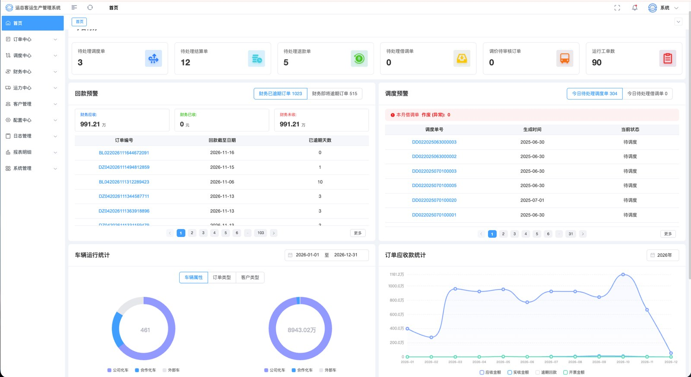
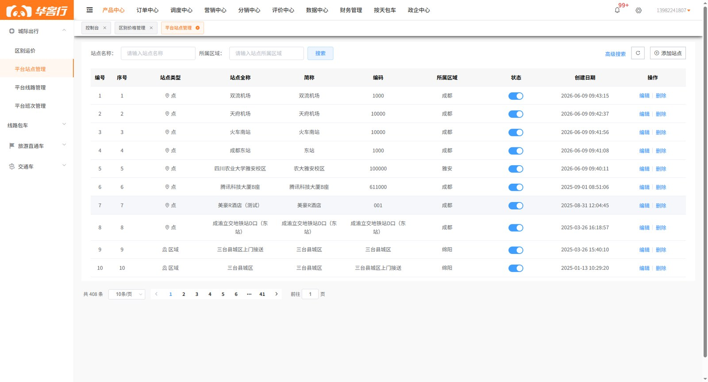
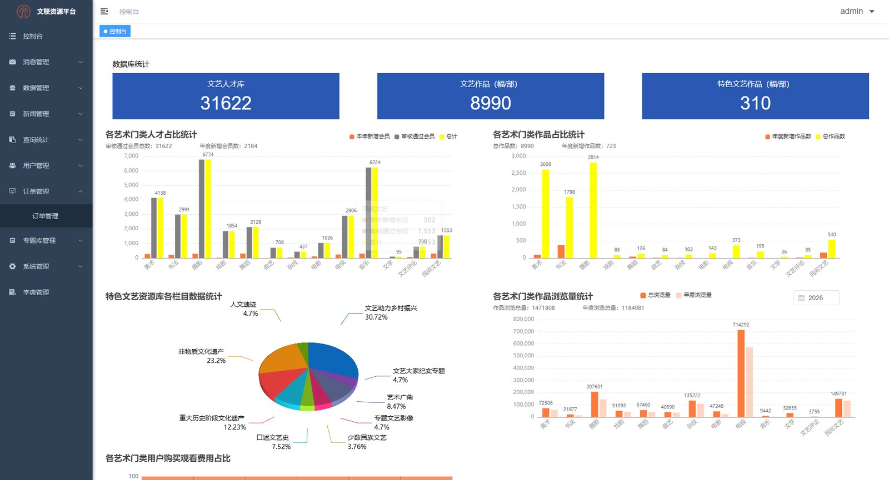
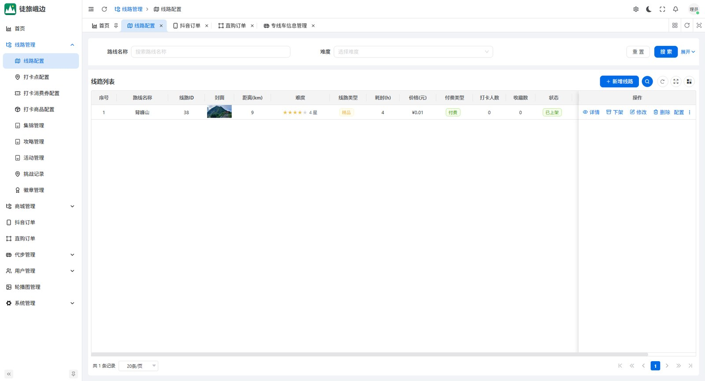
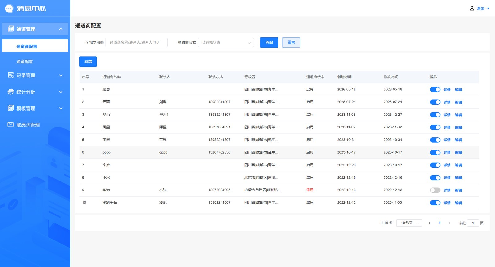
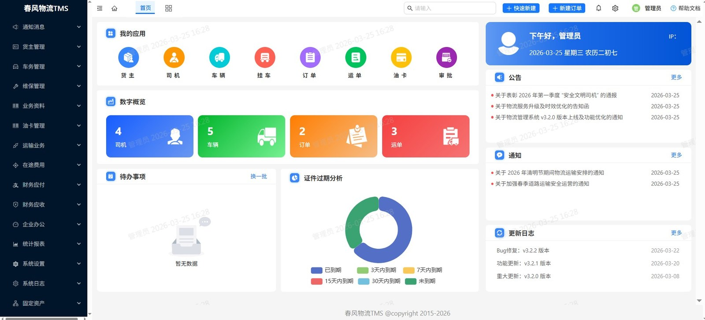

把行业流程
做成可交付系统。Turning industry workflows
into deliverable systems.
九个已落地的行业系统：客运生产、物流运输、仓储供应链、商贸流通、徒步文旅、公共文化、病区关护与消息中台。它们共用一套微服务骨架，差异留在业务层。Nine shipped industry systems — passenger transport, logistics, warehousing, trade, trail tourism, public culture, ward care and a messaging hub. They share one microservice backbone; the differences live in the business layer.

案例索引Case index
01 — 09华客行HuaKeXing
四端协同的城市交通出行一体化平台Four-surface platform for city and intercity passenger travel
面向城际出行与旅游客运的一体化乘客服务平台，覆盖旅游直通车、包车、交通车、汽车票四类产品。后台、用户、司机、调度四端共用一套运力与订单数据，把产品配置、班次排班、订单调度、司机执行到结算营销串成一条完整链路。An integrated passenger platform for intercity and tourism transport, covering tourist shuttles, charters, staff shuttles and bus tickets. Admin, passenger, driver and dispatch share one capacity and order model, chaining product setup, scheduling, order dispatch, driver execution and settlement into a single flow.
- 产品与站点配置Products & stops
- 平台站点、线路、班次按所属区域维护，支持上下架与分销模式Platform stops, routes and schedules are maintained per region, with on/off-shelf and distribution modes.
- 多业务统一下单Unified ordering
- 旅游直通车、包车、交通车、汽车票进入同一订单体系Tourist shuttles, charters, staff shuttles and bus tickets enter one order system.
- 运力与调度Capacity & dispatch
- 车辆、司机排班派单，调度端集中处理线路与包车订单Vehicle and driver rostering; the dispatch console handles routes and charter orders together.
- 司机执行与上报Driver execution
- 司机端接单、发车、行程上报，闭环回到调度端Drivers accept jobs, depart and report the trip, closing the loop back to dispatch.
- 运营与财务Operations & finance
- 营销活动、评价体系、财务结算与经营数据看板Campaigns, ratings, financial settlement and an operations dashboard.

客运生产管理系统Charter Ops System
以包车业务为主线的生产经营系统Charter-first production and operations system
以包车业务为主线的生产型管理系统。业务员、调度、财务、管理四类角色在 PC 端协同完成录单、调度与结算，运客管移动端承接外勤工单，运智驾供司机接单、发车与收款，三端配合跑通包车业务全流程。A production management system built around charter business. Sales, dispatch, finance and management work together on PC for order entry, dispatch and settlement; the field app carries external work orders; the driver app covers job acceptance, departure and collection — three surfaces running the full charter flow.
- 订单录入与补录Order entry & backfill
- 客户、联系人、用车日期、行程模板与每日行程分段录入Customer, contact, travel date, itinerary template and daily segments captured in one form.
- 车辆调度Vehicle dispatch
- 调度模式、班段调度、运力需求与已调车辆统一编排Dispatch modes, shift scheduling, capacity demand and assigned vehicles planned together.
- 结算与回款预警Settlement & collection alerts
- 待处理结算单、退款单、逾期订单与回款截止日预警Pending settlements, refunds, overdue orders and collection deadlines surfaced in advance.
- 报表与经营看板Reports & dashboard
- 车辆运行统计、订单应收款统计、运行工单数实时呈现Vehicle utilisation, receivables and live work-order counts on one board.
- 移动外勤与司机执行Field & driver execution
- 外勤处理工单；司机接单、发车执行、司机收款Field staff handle work orders; drivers accept jobs, depart and collect payment.
食汇通ShiHuiTong
PC 与 PDA 双端的食品仓储管理系统Food warehousing on PC and PDA
面向食品仓储场景的 WMS。PC 端管理货品、库区与客户基础资料，完成入库、出库、盘点与货品转移；PDA 端在库内完成移动收货与发货。系统同时提供效期预警、库存与报表查询以及财务收款，实现仓储业务的全流程管控。A WMS for food warehousing. On PC, teams maintain goods, storage zones and customer master data, and complete inbound, outbound, stocktake and transfers; on PDA, staff do mobile receiving and picking inside the warehouse. Expiry alerts, stock and report queries and payment collection complete the flow.
- 入库管理Inbound
- 按货主与货品编码登记到货，批量提交、导入与打印入库单Register arrivals by owner and SKU code; batch submit, import and print receipts.
- 出库管理Outbound
- 出库单生成、状态跟踪与发货确认Generate outbound orders, track status and confirm shipment.
- 盘点作业Stocktake
- 盘点计划、盘点单与差异核对Stocktake plans, count sheets and variance reconciliation.
- 库存与效期Stock & expiry
- 库位库存、效期预警、临期与过期库存统计Location-level stock, expiry alerts and near-expiry or expired statistics.
- 货品转移与财务Transfers & finance
- 库区之间货品转移；收款登记与库存报表Goods transfer between zones; payment registration and stock reports.

智能关护管理系统Smart Care
病区患者安全照护的三端一体方案Three-surface patient safety care for hospital wards
面向医院病区患者安全照护的智能平台。以手环、工牌、基站与摄像头为感知层，把室内外融合定位、健康体征监测、电子围栏、告警处置、查房巡视与视频监控连成闭环，为院内提供可落地的智慧安全关护能力。A smart platform for patient safety in hospital wards. Wristbands, badges, base stations and cameras form the sensing layer, closing the loop across indoor and outdoor positioning, vitals monitoring, geofencing, alarm handling, ward rounds and video surveillance.
- 患者档案与出入院Patient records
- 患者、医护、病区房间与床位基础档案管理Patient, staff, room and bed master data; admission and discharge.
- 设备接入与绑定Device onboarding
- 手环扫码绑定、换绑、解绑，工牌、基站、摄像头统一纳管Wristband scan-bind, rebind and unbind; badges, base stations and cameras managed together.
- 定位与电子围栏Positioning & geofencing
- 室内外融合定位、轨迹回放、越界与未按时返房告警Indoor and outdoor fused positioning, track replay, boundary and missed-return alerts.
- 健康监测Vitals monitoring
- 心率、血压、血氧、睡眠数据采集与异常提示Heart rate, blood pressure, SpO2 and sleep captured with anomaly prompts.
- 告警处置与视频联动Alarm handling & video
- 告警分级、处置留痕，联动调取现场监控与告警录像Alarm grading with handling logs; pulls live camera and alarm footage on demand.
- 查房与住院记录Ward rounds & records
- 查房计划、巡视记录、用药与住院记录Round plans, patrol logs, medication and admission records.

文联资源平台Sichuan Arts Resource Platform
四川文艺资源的一体化归集与展示平台Unified aggregation and showcase for Sichuan's literary and art resources
面向四川文艺领域的一体化资源服务平台，即文艺云数据平台。后台供文联与文艺机构管理人员上传、审核、分类、管理作品与专题并完成数据统计；平台端面向公众，汇聚美术、书法、摄影、舞台艺术、数字艺术等巴蜀文艺精品，划分线上展馆专区集中呈现。An integrated resource service platform for Sichuan's literary and art sector — a cloud data platform. Federation and institution staff upload, review, classify and manage works and features and run statistics; the public portal gathers fine art, calligraphy, photography, stage art and digital art into curated online exhibition zones.
- 文艺资源库Resource repository
- 文艺人才库、文艺作品（幅 / 部）与特色文艺作品库分类建库Talent, works (pieces and volumes) and special collections catalogued by category.
- 上传审核与分类Upload review
- 作品、展览、非遗、专题的上传、审核、分类与下架管理Upload, review, classify and unpublish works, exhibitions, heritage items and features.
- 线上展馆与专题Online exhibitions
- 多展馆专区，非遗项目、舞台艺术、年度优秀歌曲等专题呈现Multiple exhibition zones for heritage projects, stage art and annual song selections.
- 检索与浏览Search & browse
- 文字检索、语音检索，按推荐、热门、最新维度浏览Text and voice search; browse by recommended, popular and latest.
- 统计与运营Analytics & operations
- 各艺术门类人才、作品、浏览量、购买观看费用统计；用户与订单管理Statistics by art category on talent, works, views and ticketing; user and order management.

徒旅峨边Trail Ebian
徒步文旅场景的三端一体数字化平台Three-surface digital platform for trail tourism
围绕峨边徒步文旅场景搭建的一体化平台，采用前后端分离的 B/S 架构。PC 端管理徒步线路、打卡点、活动徽章、商城与代步出行；小程序端承接游客的打卡、领券、购物与打车，一站式覆盖徒步游玩、消费与出行。A platform built around trail tourism in Ebian on a separated front and back end architecture. On PC, teams manage trails, check-in points, badges, the mall and local transport; the mini program serves visitors with check-ins, coupons, shopping and rides — covering hiking, spending and getting around in one place.
- 徒步线路配置Trail setup
- 难度、里程、预计耗时、价格、封面与收藏状态维护Difficulty, distance, duration, price, cover image and bookmark state.
- 打卡与徽章Check-ins & badges
- 打卡点配置，打卡解锁徽章与优惠券Check-in points, badge unlocks and coupons.
- 活动与挑战Campaigns & challenges
- 活动配置、挑战记录、徒步攻略与收藏Campaign setup, challenge records, trail guides and bookmarks.
- 商城与订单Mall & orders
- 商品管理、抖音订单与直购订单处理Product management, Douyin orders and direct-purchase orders.
- 出行配套Local transport
- 徒步专线车、出租车司机管理与代步打车订单Trail shuttle and taxi driver management, plus ride orders.

消息中心Message Hub
多通道统一消息推送管理平台Unified multi-channel message delivery platform
统一消息推送管理平台。把短信、App、小程序、站内信等多通道收敛到一套模板与发送链路，支持模板管理、推送记录查询、统计分析与敏感词管控，为各类业务系统提供一站式消息分发服务。A unified message delivery platform. SMS, app, mini program and in-app messages converge onto one template and delivery pipeline, with template management, delivery records, analytics and sensitive-word control — one-stop distribution for every business system.
- 通道商与通道配置Channels & providers
- 短信服务商、邮件、微信、钉钉、飞书、Push 等通道统一接入与启停SMS providers, email, WeChat, DingTalk, Feishu and push onboarded and toggled in one place.
- 消息模板管理Templates
- 按业务场景维护模板，支持变量替换与多通道复用Templates maintained per scenario, with variable substitution and multi-channel reuse.
- 发送与回执Delivery & receipts
- 发送记录、回执状态、失败重试与链路追踪Send records, receipt states, retries and trace links.
- 统计分析Analytics
- 按通道、业务系统、时间维度统计发送量与成功率Volume and success rate by channel, system and time window.
- 敏感词与人群推送Sensitive words & audiences
- 敏感词管控；人群文件批量推送、夜间屏蔽与限流Sensitive-word control; bulk audience files, night-time suppression and rate limits.

慢游TMSManyou TMS
货主到结算的物流运输管理系统Logistics transport management, from shipper to settlement
面向物流运输行业的 TMS 管理系统，覆盖货主、司机、车辆、挂车、运单、在途费用、财务、报表、审批、油卡与固定资产等核心业务。管理端承担调度与财务管控，移动端承载司机执行与费用上报，两端协同跑通运输业务。A TMS for the logistics industry covering shippers, drivers, vehicles, trailers, waybills, trip costs, finance, reports, approvals, fuel cards and fixed assets. The admin console owns dispatch and financial control; the mobile app carries driver execution and cost reporting.
- 货主与合同Shippers & contracts
- 货主新建与档案维护，合同签订与合同类型管理Shipper onboarding and records, contract signing and type management.
- 车务管理Fleet operations
- 车辆、挂车、司机、车队与轨迹查询，证件审核Vehicles, trailers, drivers, fleets and tracking; document verification.
- 运输业务Transport
- 订单（货源）发布与调度分配司机，运单、装卸货与运费结算Order (cargo) publishing and driver assignment; waybills, loading, unloading and freight settlement.
- 在途费用与油卡 ETCTrip costs & fuel / ETC
- 现金出车款、油卡充值申请与上报，ETC 与油卡管理Cash advances, fuel-card top-ups and reporting; ETC and fuel-card management.
- 财务应收应付AR & AP
- 提交核算、应收核销、申请开票，应付现金与应付油卡Cost submission, receivable write-off and invoicing; cash and fuel-card payables.
- 统计报表与资产Reports & assets
- 客户毛利、运单利润、资金流水等报表；资产、维保与低值易耗品Shipper margin, waybill profit and cash-flow reports; assets, maintenance and consumables.

慢游ERPManyou ERP
采购销售库存财务一体的进销存系统Purchasing, sales, stock and finance in one system
一套前后端分离的进销存系统，覆盖基础数据、产品、采购、销售、库内作业、财务与报表。面向中小商贸与仓储企业，也适合作为 ERP 二次开发的基础项目；Docker 一条命令即可起全栈，并自带覆盖各业务模块的演示数据。A separated front and back end inventory and trade system covering master data, products, purchasing, sales, warehouse operations, finance and reports. Built for small and mid-sized traders and warehouses, and usable as a base for ERP customisation: one Docker command brings the full stack up with demo data across modules.
- 基础数据Master data
- 客户、供应商、仓库、结算账户与收支项目Customers, suppliers, warehouses, settlement accounts and income/expense items.
- 产品与批次Products & batches
- 产品分类、单位、产品信息，批次管理与临期预警Categories, units, product information, batch management and expiry alerts.
- 采购管理Purchasing
- 采购开单、采购记录、采购退货与退货记录Purchase orders, records, returns and return records.
- 销售管理Sales
- 销售开单、销售记录、销售退货与退货记录Sales orders, records, returns and return records.
- 库内作业Warehouse ops
- 入库任务、出库任务、盘点、调拨与库存流水Inbound and outbound tasks, stocktake, transfers and the stock ledger.
- 财务与报表Finance & reports
- 收付款、应收应付、账户转账、日常收支；采购、销售、库存、批次与收支报表Payments, receipts, AR/AP, account transfers and daily income/expense; purchase, sales, stock, batch and cash reports.

技术底座Foundation
六个共用能力Six shared capabilities一套骨架，支撑八类场景One backbone, eight industry contexts
先用一套经过验证的微服务骨架搭起账户、权限、网关、消息与运维能力，再把行业流程建模进业务模块。行业差异留在业务层，通用能力沉淀为可复用组件。Start with a proven microservice backbone for accounts, permissions, gateway, messaging and operations, then model each industry's workflow into business modules. Industry difference stays in the business layer; shared capability becomes reusable components.
微服务底座Microservice backbone
以 Nacos 注册配置、Gateway 网关、Seata / TX-LCN 分布式事务、Sentinel 流量治理组成的标准微服务骨架，同一套骨架在客运、物流、仓储、文化、医疗五类系统中复用。A standard microservice skeleton — Nacos registry and config, Gateway, Seata / TX-LCN distributed transactions and Sentinel flow control — reused across passenger transport, logistics, warehousing, culture and healthcare systems.
多端协同Multi-surface delivery
PC 管理端、移动 PDA、司机端、微信小程序与开放 SDK 共用一套服务端能力；uni-app 一套代码发布 App、H5 与小程序。PC console, PDA, driver app, mini program and open SDK share one server capability; a single uni-app codebase ships app, H5 and mini program.
数据与可视化Data & visualisation
MySQL、PostgreSQL（PostGIS）、国产信创数据库多源并存；TDengine 承接时序数据，Elasticsearch 承接检索，ECharts 与积木报表承接看板。MySQL, PostgreSQL (PostGIS) and domestic stacks coexist; TDengine handles time series, Elasticsearch handles search, ECharts and JimuReport handle dashboards.
物联网接入IoT access
MQTT 与 TCP 长连接双通道接入手环、工牌与基站，GPS / 基站融合定位、电子围栏空间计算、RTSP 视频转流与告警录像。MQTT and long-lived TCP connect wristbands, badges and base stations; fused GPS and base-station positioning, geofence computation, RTSP streaming and alarm footage.
消息与流程Messaging & workflow
短信、邮件、微信、钉钉、飞书、App Push 多通道统一分发，配合 Flowable 工作流承载审批、查房与业务流转。SMS, email, WeChat, DingTalk, Feishu and app push fan out through one distribution layer, with Flowable carrying approvals, ward rounds and business flow.
安全与运维Security & operations
Spring Security / Sa-Token / OAuth2 统一认证，RBAC 与数据权限分级；SkyWalking 链路追踪、Prometheus 监控、XXL-JOB 调度、Docker 编排交付。Spring Security / Sa-Token / OAuth2 with RBAC and scoped data permissions; SkyWalking tracing, Prometheus monitoring, XXL-JOB scheduling and Docker delivery.